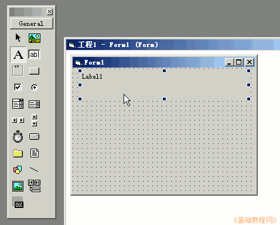
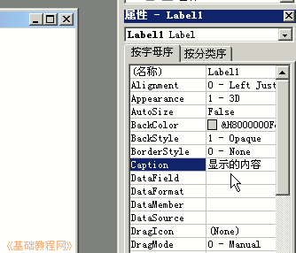
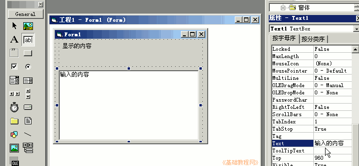
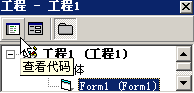
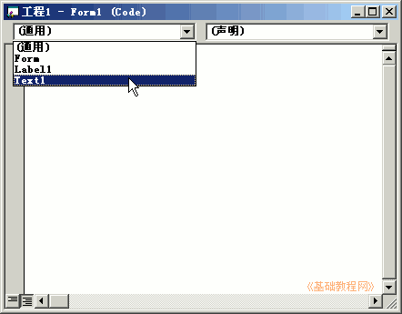
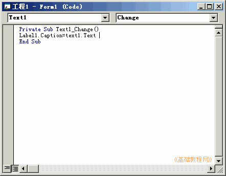
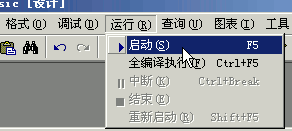
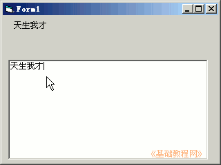

2011-2012 第一学期九年级 VB 教学课程设计
作者：TeliuTe 来源：基础教程网
二、学会控件 返回目录 下一课学习目标：学会绘制控件，修改属性，进入代码窗口；
注意事项：画控件的方法，删除错误控件，自动输入代码；
1、绘制控件
1）进入vb窗口，在左边工具箱里找到标签控件，在工作区里画一个label1控件；

2）在右边的属性窗口中，找到 C 开头的 caption，改成“显示的内容”；

3）再在左边选择文本框控件，在工作区画一个大的文本框，把Text属性改成“输入的内容”；

2、输入代码
1）点右上角工程里的的白色图标，进入代码窗口；

2）点左边的下拉列表，选择Text1；

3）在出来的代码中间，光标闪的地方输入代码，出来提示可以用鼠标双击，或者按一下空格键；
label1.caption=text1.text

4）保存文件为“第二课”，注意保存两次，点菜单“运行－启动”，在文本框里输入一句名言；
 
课后记 2011-9-4 20:06：
学一下窗体和控件本节学习了控件的基础知识，如果你成功地完成了练习，请继续学习下一课内容；
本教程由86团学校TeliuTe制作|著作权所有
基础教程网：http://teliute.org/
美丽的校园……
转载和引用本站内容，请保留版权信息和本站链接。